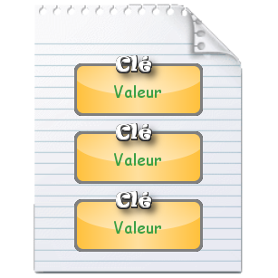
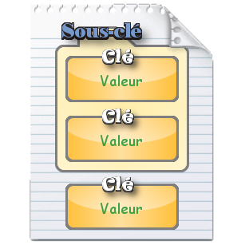
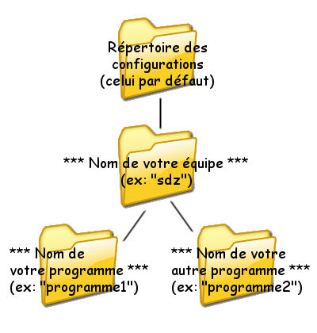
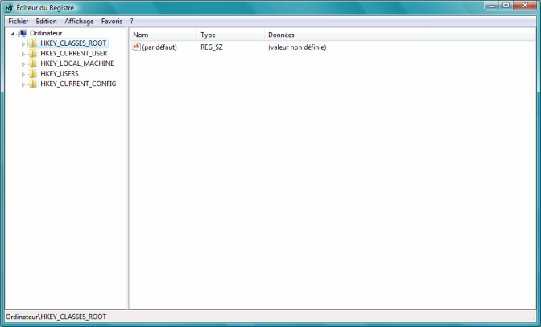
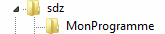
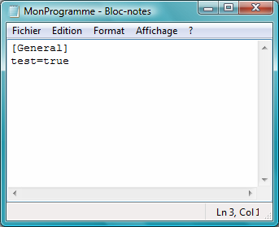
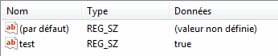
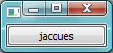

Parfois, dans vos programmes Qt, vous avez peut-être déjà eu besoin de garder en mémoire certaines informations souvent liées à la configuration.
Par exemple :
la taille et la position de la fenêtre ;
les options du programme ;
le thème ;
etc.
Évidemment, pour se "souvenir" de ces données au prochain lancement du programme, il faut les stocker définitivement sur le disque dur, sous forme de fichier. Qt propose pour ça la classe QFile. Problème : des options sont souvent des informations simples, qui se résument généralement par "cette donnée vaut cette valeur, cette option est activée, etc.". Utiliser un fichier pour faire cela, c'est un peu exagéré.
Il y a une autre contrainte avec un fichier : comment différencier chaque option ?
Je sais, on fait une ligne par donnée, et hop c'est dans la poche ! :D
Non, car cette méthode ne serait pas très souple : en effet, il y aurait un ordre précis, ce serait dur à maintenir et à modifier.
La meilleure solution, c'est d'utiliser la classe QSettings, qui a été spécialement créée (que de "e" dans un même mot... :p ) pour enregistrer des options !
Un peu de théorie est nécessaire pour commencer, sinon il va être impossible d'expliquer comment manipuler les données.
La structure d'un fichier d'options
Quand on sauvegarde des options avec QSettings, on va en fait écrire une série de données qui vont chacune contenir une information (cette information doit pouvoir varier, sinon il n'y a pas d'intérêt de la garder en mémoire :lol: ).
Comme tout programmeur qui se respecte, vous allez devoir utiliser du vocabulaire précis :
chaque donnée est appelée une clé : c'est le nom de l'information, qui permet de la différencier des autres ;
l'information que porte chaque clé est la valeur.
Un fichier d'options peut donc être représenté de cette façon :

Figurez-vous que, comme dans un OS, on peut également structurer les informations en les regroupant dans des dossiers : on parle alors de sous-clé ; c'est une clé un peu spéciale, elle n'a pas de valeur, elle contient juste d'autres clés, exactement comme un dossier contient des fichiers.
Le même schéma que le précédent mais avec les sous-clés en plus :

Les différentes techniques de stockage
QSettings propose 3 formats pour le fichier d'options.
Le format natif : ce format n'en est pas vraiment un, du fait qu'il dépend de votre OS. C'est le plus simple à utiliser puisque QSettings va gérer la création du fichier. ;)
Le format INI : le fichier a l'extension .ini, format de base des options de configuration.
Un format invalide : ce dernier produit un format personnalisé, mais il est trop compliqué pour nous y intéresser dans ce tutoriel (il faut par exemple définir ses propres fonctions de lecture et écriture :-° ).
Le format natif
Les options vont être stockées vraiment différemment selon les OS. Voici un petit tableau représentatif :
OS
Format
Unix
Les options sont écrites dans un fichier texte, avec l'extension .conf.
Mac OS X
Les options sont stockées dans le dossier des préférences système (d'après la doc : "the CFPreferences API"), dans des fichiers spéciaux .plist.
Windows
Ici, pas de fichiers, on utilise directement le registre système (rassurez-vous, si vous utilisez bien QSettings, il n'y aucun risque de dommage ^^ ).
Le format INI
Comme je l'ai dit précédemment, ce format force la création d'un fichier .ini, quel que soit l'OS utilisé.
On peut alors définir un chemin différent du chemin par défaut (qui n'est pas très accessible :p ), et c'est plus facile pour une éventuelle maintenance.
Maintenant que tout est clair, nous allons pouvoir commencer les choses sérieusement ! :pirate:
Avant de commencer, créez un nouveau projet. Comme on ne va pas créer de fenêtre (du moins pas dans cette partie), vous aurez seulement besoin du main.cpp :
Nous allons créer un nouveau fichier d'options en créant un nouvel objet QSettings. Voici le constructeur :
QSettings::QSettings ( const QString & organization, const QString & application = QString(), QObject * parent = 0 )
Le dernier argument (l'objet parent) est un QObject (vous pouvez mettre n'importe quelle classe de Qt) qui se chargera de libérer votre objet de la mémoire en cas d'allocation dynamique. Vu que ce n'est pas le cas ici, nous allons seulement remplir les deux premiers : organization et application, qui sont le nom de votre équipe et le nom de votre programme.
Mais qu'est-ce qu'on en a à faire du nom de notre équipe et de notre programme ? o_O Ça n'aurait pas été mieux de dire le chemin ou le nom du fichier ?
La raison vient du fait que nous allons utiliser le format natif pour notre fichier d'options (rappelez-vous, celui qui dépend de votre OS). Vous ne pouviez pas le savoir, puisqu'on ne l'a pas précisé dans le constructeur, car c'est le format par défaut. Comme on utilise un chemin de stockage totalement différent selon les OS, l'emplacement du fichier ne peut être précisé. Le fichier sera créé dans le répertoire des configurations de votre OS.
Du coup, pour le différencier des autres, QSettings va le placer dans un sous-répertoire : un dossier portant le nom de votre programme, qui est lui-même contenu dans un dossier portant le nom de votre équipe.
C'est un peu compliqué, donc rien ne vaut un schéma pour expliquer :

Le constructeur
Si tout est clair, nous allons tester le constructeur. Nous allons choisir "sdz" comme nom d'équipe et "MonProgramme" comme nom de programme. Reprenez le main et ajoutez-y ces lignes :
Compilez et lancez le programme : rien ne se passe (à part la fenêtre vide). En fait, le programme vient de créer votre fichier, sans que vous ne vous en rendiez compte. Suivez ce tableau pour le retrouver :
OS
Emplacement
Unix
$HOME/.config/sdz/MonProgramme.conf où $HOME est le répertoire de votre home
Mac OS X
$HOME/Library/Preferences/com.sdz.MonProgramme.plist où $HOME est le répertoire de votre home
Windows
HKEY_CURRENT_USER\Software\sdz\MonProgramme qui est un répertoire du registre système
Le cas de Windows
Euh, moi je suis sous Windows :euh: ... Et je n'ai pas tout compris à ton chemin bizarre et ton "registre système"...
Le registre système est en quelque sorte un immense fichier d'options qui contient absolument toute la configuration de votre ordinateur. Y sont stockés :
les options des programmes ;
les infos du panneau de configuration ;
les différents périphériques installés ;
mais aussi, comme son nom l'indique, des informations sur le système auxquelles il ne faut pas toucher si vous tenez à la santé de votre OS. :D
Étant structuré comme nos fichiers d'options, il contient beaucoup de sous-clés, que l'on considère comme des répertoires. Le chemin si bizarre que je vous ai donné plus haut est donc la liste des sous-clés à suivre pour accéder à votre programme.
Oui mais comment j'y accède moi au registre ? L'explorateur ne trouve pas le dossier HKEY_CURRENT_USER ! :colere2:
Il va falloir utiliser un logiciel spécial intégré à Windows, qui s'appelle regedit (pour REGistry EDITor, l'éditeur du registre). Celui-ci affiche, sous forme d'arborescence, la liste de toutes les clés et sous-clés qui ont été inscrites dans le registre (celles des autres programmes mais aussi celles du système). Il permet même d'éditer manuellement les valeurs de ces clés, mais ne faites cela que si vous êtes absolument sûrs de ce que vous faites (vous pourriez perdre des données importantes ou même foutre en l'air votre système :waw: ).
Pour ouvrir ce logiciel (il est bien caché), faites "Exécuter" dans le menu Démarrer, et tapez "regedit", sans les guillemets. Si vous avez un message de sécurité, acceptez-le. Voici comment se présente le programme sous Vista :

Déplacez-vous dans les sous-clés et allez jusqu'à l'emplacement de votre fichier d'options de vos sous-clés (c'est-à-dire HKEY_CURRENT_USER\Software\sdz\MonProgramme). Vous devriez voir ceci :

Conclusion
Vous avez créé votre fichier, mais pour l'instant il ne sert à rien. Il serait peut-être temps d'apprendre à le remplir ! ;)
Voici la fonction de la classe QSettings qui permet d'écrire des clés :
void QSettings::setValue ( const QString & key, const QVariant & value )
Cette méthode prend donc deux arguments : le nom de la clé et sa valeur.
Gné c'est quoi cet argument o_O QVariant value... Et si je veux mettre un int ?
En fait, QVariant est une classe Qt, qui permet de stocker n'importe quel type de variable ou d'objet. En regardant la doc, on se rend compte que cette classe peut représenter un grand nombre de classes Qt (la liste complète...).
L'intérêt de cette classe réside dans le fait que l'on peut créer des fonctions qui acceptent tous les types de Qt, comme c'est le cas dans la méthode setValue ; la fonction se charge alors de convertir la QVariant passée en argument dans le type originel.
De plus, comble du bonheur, vous n'êtes pas obligés de créer un objet QVariant pour utiliser setValue : indiquez seulement votre objet ou variable, Qt se charge de le transformer en QVariant. Plus simple tu meurs. :D
Je teste, tu testes, il teste...
Essayons cette fonction avec le fichier d'options que l'on a créé tout à l'heure. Ici, je vais appeler ma clé "test" et elle aura pour valeur "true" (un booléen) :
Compilez et exécutez le code (vous verrez toujours la fenêtre vide). Normalement, la clé a dû être écrite (ou alors votre ordi ne marche pas :p ). Voici ce que vous devriez avoir dans votre fichier d'options :

Et dans le regedit :

Vous pouvez remarquer la clé appelée "(par défaut)" ; c'est une fonction spécifique à Windows, cette clé sert à attribuer une valeur à la sous-clé actuelle (si vous l'utilisez, votre programme ne sera pas portable !)
Y'a un truc qui m'asticote depuis tout à l'heure... Et si je veux enregistrer un objet qui n'est pas dans la liste de la QVariant ?
Heureusement, les développeurs ont tout prévu : quand le deuxième argument ne peut être stocké dans la QVariant, il est automatiquement converti pour qu'il puisse être stocké. Vous pouvez donc écrire n'importe quel objet, même d'une classe que vous avez créée ! :p
Ecrire des sous-clés
Et voici la fonction qui permet d'écrire des sous-clés...
void QSettings::setValue ( const QString & key, const QVariant & value )
Eh, mais c'est la même que pour les clés ! :waw:
Ben oui. Et c'est normal. En effet, on ne crée pas de sous-clés directement ; elles vont être ajoutées automatiquement en écrivant des clés stockées dans ces sous-clés.
Comment ? Cela va se passer dans le premier argument de la fonction. Je vous avais dit qu'il représentait le nom de la clé, eh bien... je vous ai menti. :honte: On indique en réalité le chemin de la clé. Oui oui, comme pour un fichier, avec les slashes ! Comme tout à l'heure nous n'avions pas besoin de structurer notre fichier avec des sous-clés, il était inutile d'en créer.
Mais toutes les explications au monde ne vaudront jamais un bon exemple. Ici, je vais créer une clé "nom" avec pour valeur "granarc" et une clé "age" avec pour valeur "13" (eh oui je suis jeune ^^ ) ; elles seront toutes les deux stockées dans la sous-clé "Identite".
On remarque que dans le fichier, la sous-clé est indiquée par son nom entre crochets [] (si c'est une sous-sous-clé elle sera indiquée par son chemin, par exemple Famille/pere=Patrick pour la clé "Identite/Famille/pere"), et dans le regedit, elle est indiquée par un nouveau dossier dans l'arborescence.
Exercice : écrivez le code qui produirait le fichier suivant :
Voici encore trois choses qui pourraient vous être utiles.
Éditer une clé
Pour cela, c'est très simple, si vous utilisez setValue sur une clé déjà existante, la valeur de cette clé est remplacée par celle que vous demandez.
Supprimer une clé
Utilisez la fonction remove :
void QSettings::remove ( const QString & key )
Vous n'avez qu'à indiquer le nom (ou le chemin) de la clé à supprimer.
Se déplacer dans les sous-clés
Si vous avez beaucoup de sous-clés, c'est un peu gavant de réécrire le chemin entier de chaque clé ; si vous avez fait l'exercice proposé au-dessus, vous avez dû le remarquer. Heureusement, il existe une fonction qui permet de se déplacer dans une sous-clé, qui dit au QSettings : "Attention, les clés qui vont être écrites maintenant se trouvent dans telle sous-clé".
Il suffit pour cela d'utiliser la méthode beginGroup qui prend en seul paramètre le nom de la sous-clé dans laquelle aller. Vous pouvez utiliser maintenant setValue pour écrire vos données ; quand vous avez fini, appelez la méthode endGroup (ne prend aucun argument), cela vous fera revenir à la racine de votre fichier d'options.
Ce code donnera la même chose que notre exemple précédent :
Vous avez désormais toutes les cartes en main pour garder en mémoire absolument toute la configuration de votre programme. Cependant, il vous manque une chose essentielle : savoir lire ces informations !
QVariant QSettings::value ( const QString & key, const QVariant & defaultValue = QVariant() ) const
Le premier argument est le nom de la clé à lire ; comme pour setValue, vous pouvez indiquer les sous-clés ou utiliser beginGroup et endGroup. Le second argument est la valeur par défaut que renverra la fonction si la clé n'est pas trouvée. Encore une fois, inutile de créer un objet QVariant, la fonction se charge de convertir automatiquement l'argument qu'on lui passe.
Utilisation simple
Il est temps de tester cette fonction. Reprenez l'exemple de tout à l'heure ; nous allons afficher dans un bouton la valeur de la clé "nom" contenue dans la sous-clé "Identite" :
Compilez et vous devriez obtenir... une belle erreur ! :D
Que nous dit le compilateur ?
main.cpp:13: error: no matching function for call to 'QPushButton::setText(QVariant)'
Mais oui, c'est normal ! Regardez le prototype de value : la fonction renvoie une QVariant, car elle ne sait pas de quel type sont les données récupérées ; comme la méthode setText attend une QString, forcément, ça plante !
Il y a un moyen simple de contourner le problème : en regardant la doc de QVariant, on voit qu'il y a toute une série de fonctions commençant par "to", qui reconvertissent la QVariant dans son type d'origine. Ici, nous voulons une QString, donc nous allons appliquer la méthode toString à la QVariant que l'on nous renvoie :
Souvenez-vous : il y avait un deuxième argument, celui de la valeur par défaut. Si la clé est introuvable (pas encore créée par exemple), la fonction va renvoyer une QVariant contenant cette valeur.
Essayez d'obtenir une clé inexistante ("prenom" par exemple) avec comme valeur par défaut "jacques" (ce n'est pas mon prénom si vous voulez savoir ^^ ) :
#include <QApplication>
#include <QPushButton>
#include <QSettings>
int main(int argc, char* argv[])
{
QApplication app(argc, argv);
QPushButton bouton;
bouton.show();
QSettings settings("sdz", "MonProgramme");
// J'ai un peu réorganisé le code pour être plus clair
QString prenom = settings.value("Identite/prenom", "jacques").toString();
bouton.setText(prenom);
return app.exec();
}
Et le résultat :

Remarquez que si, dans ce même code, vous ne précisez pas de valeur par défaut, la méthode renverra une QVariant vide.
J'ai une dernière petite question. Pour la méthode setValue, tu nous a dit que si on utilisait un objet qui n'était pas stockable dans une QVariant, la fonction s'occupait de le convertir. Mais là, vu que c'est nous qui devons faire la conversion, comment faisons-nous, hein ? Y'a pas de méthode toColor par exemple !
Dans ce cas, il suffit d'utiliser la fonction valuede la QVariant. C'est une fonction utilisant les templates, vous aurez juste à indiquer entre chevrons <> le type de l'objet à renvoyer. Exemple en supposant que j'aie enregistré une clé "couleur" ayant pour valeur une QColor noire :
Voici quelques autres fonctions qui pourraient vous servir un jour :
allKeys()
Cette fonction renvoie une QStringList de toutes les clés contenues dans la sous-clé actuelle ; celles qui sont contenues dans des sous-clés enfants sont sous la forme sous-clé/clé. Exemple :
Pour l'instant, notre fichier d'options était sous le format natif, et donc son type et son emplacement changeaient radicalement selon les OS. Peut-être que, pour des raisons de goûts ou de besoins, vous préférerez qu'il soit forcément stocké sous forme de fichier INI. Le gros avantage c'est que vous pourrez alors spécifier votre propre emplacement pour le fichier.
Pour créer un fichier d'options en précisant le chemin du fichier et non le nom du programme et l'équipe, nous allons utiliser ce constructeur :
QSettings::QSettings ( const QString & fileName, Format format, QObject * parent = 0 )
L'argument filename est le nom du fichier (avec éventuellement son emplacement relatif ou absolu).
L'argument format sert à indiquer le format du fichier d'options. Les valeurs possibles sont celles de l'énumération Format (expliqué au début du tuto).
Le dernier argument (parent) sert à la même chose que dans notre ancien constructeur ; si vous ne vous en souvenez plus, retournez voir en dessous du constructeur de la partie "Créer un fichier d'options". Retenez en tout cas qu'il n'est utile que si votre objet QSettings est créé avec new (ce n'est pas le cas ici ;) ).
Après avoir lancé le programme, vous verrez apparaître un fichier "mesoptions.ini" dans le répertoire parent de votre exécutable.
Et pour la lecture / écriture ?
Eh bien figurez-vous que le constructeur est la seule chose qui change ! C'est ça la puissance de QSettings : les fonctions sont toujours les mêmes, elles s'adapteront juste au type de fichier.
QSettings en pratique
Durant tout ce tutoriel, je vous ai parlé du fonctionnement des QSettings ; cette sous-partie traitera elle de l'utilisation concrète de QSettings dans un programme.
L'écriture des données
En général, on sauvegarde la configuration du programme au moment où l'on quitte. Si vous avez un menu avec une action "Quitter", c'est très simple : connectez le signal triggered() de cette action à un slot personnalisé quitter() par exemple, où vous écrirez les clés puis appellerez le slot quit() pour fermer le programme.
Le problème, c'est que l'utilisateur peut très bien quitter en cliquant sur la croix, et là, votre enregistrement tombe à l'eau.
Alors comment on fait pour détecter si l'utilisateur clique sur la croix ?
Vous le savez, Qt détecte les événements sous forme de signaux (connectés à des slots), mais peut également détecter des événements plus généraux comme l'appui d'une touche ou un mouvement de la souris. Pour réagir avec ces événements "généraux", on n'utilise pas les signaux : Qt appelle à chaque événement une fonction qui est chargée de le traiter. Ces fonctions prennent en paramètre une des classes qui héritent de QEvent, qui représentent chacune un événement bien spécifique. L'intérêt d'avoir une classe pour chaque événement, c'est qu'elles contiennent des informations propres à l'événement. Quelques exemples de ces fonctions :
keyPressEvent ( QKeyEvent * event) : appelée quand on appuie sur une touche du clavier ;
mouseMoveEvent ( QMouseEvent * event) : appelée quand on bouge la souris ;
resizeEvent ( QResizeEvent * event) : appelée quand la fenêtre est redimensionnée ;
etc.
La fonction qui est appelée lors de la fermeture de la fenêtre est closeEvent( QCloseEvent * event). Il suffit de modifier cette fonction pour pouvoir enregistrer nos options.
Comment ça "modifier la fonction" ? Ça veut dire que je dois modifier le code source ?! o_O
Non, heureusement, nous allons donc utiliser une technique spéciale du C++ : le masquage de méthodes. Derrière ce nom complexe se cache en fait quelque chose de très simple. Si jamais une classe hérite d'une autre et qu'elles ont toutes les deux une méthode en commun, c'est la méthode de la classe fille qui est utilisée. En gros, vous pouvez modifier les méthodes d'une classe mère en les "recopiant" : on parle de ré-implémentation.
Donc, pour modifier la fonction closeEvent de la classe QWidget, nous devons :
hériter de QWidget : bon, là, rien à faire, votre fenêtre hérite forcément de cette classe ; ;)
réécrire la fonction closeEvent : c'est là que nous intervenons. :D
Ajoutez donc une fonction void closeEvent ( QCloseEvent * event ) à votre classe dans la portée protected :
#include <QWidget>
class MaClasse : QWidget // Peut hériter de n'importe quelle classe fille de QWidget
{
public:
MaClasse();
/* Vos méthodes */
private:
/* Vos attributs */
protected:
void closeEvent(QCloseEvent *event);
};
Il ne vous reste plus qu'à ré-implémenter cette fonction pour y sauvegarder les options :
/* ...Tout plein de code
pour votre programme... */
void MaClasse::closeEvent(QCloseEvent *event)
{
QSettings settings("LoremIpsum Team", "zSuperProgramme");
// Écrivez ce que vous avez à écrire
event->accept();
}
/* ...Encore du code
qui ne regarde que vous... */
La lecture
Bien, vos options sont sauvegardées, il faut maintenant les lire. Bon, c'est d'un coup moins compliqué, il suffit juste de lire les clés au début du programme (dans le constructeur ^^ ) ; la lecture peut éventuellement être faite dans une fonction à part pour plus de clarté.
Cependant, un problème (qui n'en est pas vraiment un) se pose : comment accéder ensuite aux données à l'intérieur du programme ? Cela serait évidemment une très mauvaise idée de réouvrir le fichier et de récupérer les données à chaque fois que l'on en a besoin.
Je sais, on n'a qu'à stocker le fichier QSettings dans un attribut ! :D
C'est déjà mieux, mais on gaspillerait encore du temps à lire les données à chaque fois. Non, la meilleure solution, c'est de stocker une bonne fois pour toutes dans des attributs :) . Pour mieux structurer le code et éviter les confusions, on mettra un préfixe spécial à ces attributs, "opt" par exemple.
Un exemple de programme :
Citation
#include <QPushButton>
class Fenetre : QPushButton
{
public:
Fenetre();
void chargerOptions();
private:
int opt_largeur;
int opt_hauteur;
QColor opt_couleur;
};
Avouez que maintenant, il vous est beaucoup plus facile de sauvegarder les options de votre programme, et encore plus facile de les lire.
J'espère que ce tuto vous aura servi. Si vous avez une remarque ou un problème, vous pouvez m'envoyer un MP, et n'hésitez pas à laisser un commentaire. ;)